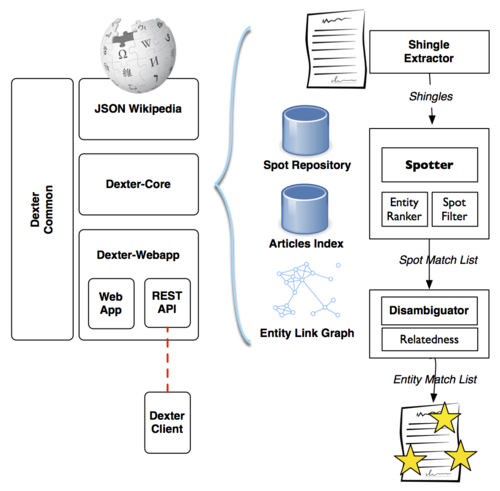

Dexter demo accepted at ISWC 2014!
Our demo paper Ceccarelli, D., Lucchese, C., Orlando, S., Perego, R., and Trani, S. “Dexter 2.0 – an Open Source Tool for Semantically Enriching Data” was accepted at the 13th Intl. Semantic Web Coference, Riva del Garda, Italy, 19–23 October 2014.
Entity Linking (EL) enables to automatically link unstructured data with entity in a Knowledge Base. Linking unstructured data (like news, blog post, tweets) has several important applications: for example it allows to enrich the text with external useful contents or to improve the categorization and the retrieval of documents. In the latest years many effective approaches for performing EL have been proposed but only a few authors published the code to perform the task. In this work we describe Dexter 2.0, a major revision of our open source framework to experiment with different EL approaches. We designed Dexter in order to be easy to deploy and to use. The framework provides several important features generally used for performing EL and it is highly modular. In this demo we present the current state of the system, the improvements made, the architecture and the APIs provided.
Visit http://www.dxtr.it/.
|  |